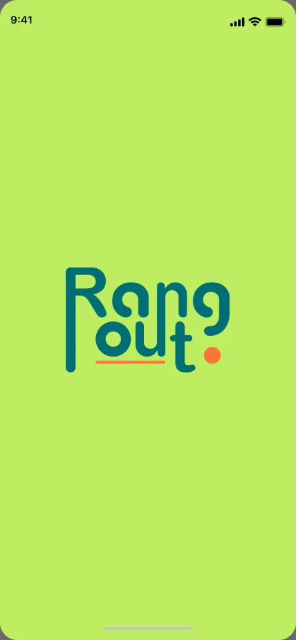
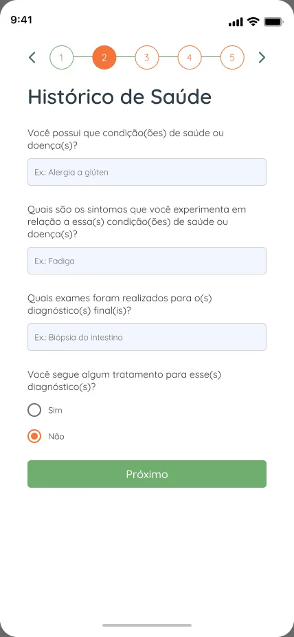
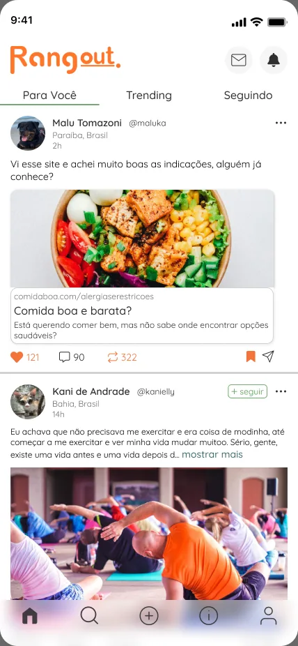
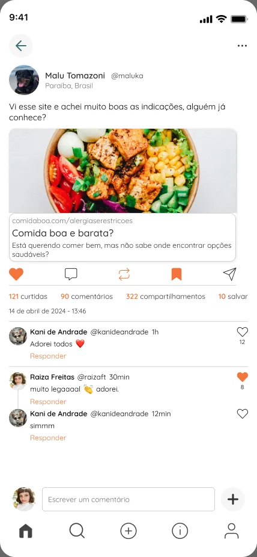
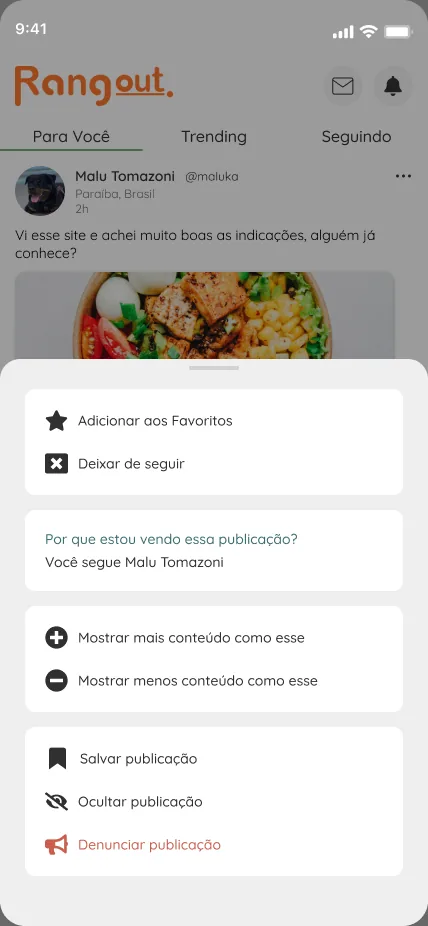
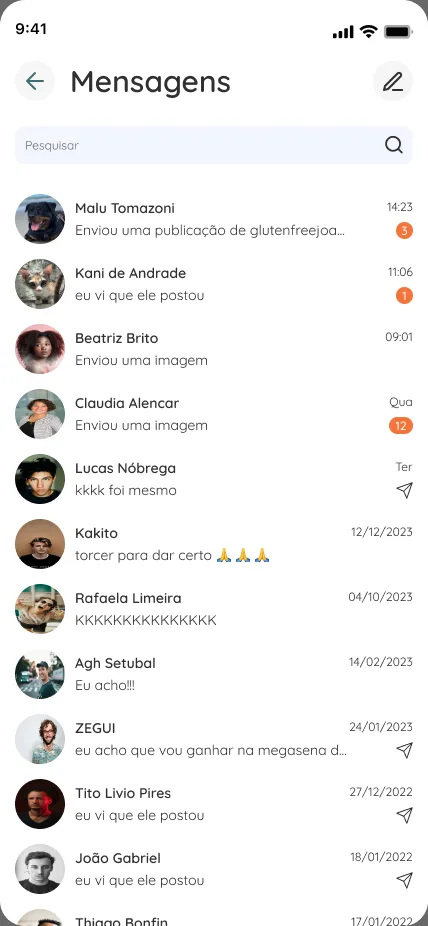

Rangout
Uma rede social para pessoas com restrições alimentares encontrarem informação confiável, lugares seguros para comer e outras pessoas que passam pelo mesmo.

O problema
Pessoas com restrições alimentares, seja por saúde, ética, motivos sociais ou religiosos, enfrentam o mesmo conjunto de dificuldades: informação pouco confiável sobre o que é seguro comer, poucos restaurantes e mercados com opções adequadas, dificuldade de achar profissionais com experiência no assunto e, muitas vezes, isolamento.
A pergunta que guiou o projeto foi: como garantir acesso a informação confiável e ampliar o conhecimento sobre restrições alimentares?
Pesquisa
Comecei organizando o que o time já sabia com o Business Model Canvas, o Canvas de Proposta de Valor e uma Matriz CSD de certezas, suposições e dúvidas. As dúvidas viraram perguntas de uma pesquisa quantitativa com pessoas diagnosticadas.
As maiores frustrações foram a falta de opções e a dificuldade de encontrar lugares adequados para comer fora. Quase sempre, a raiz era falta de informação.
Um dado orientou várias decisões: o interesse em participar de uma comunidade (76%) era bem maior que a disposição de compartilhar (50%). A rede precisava ser útil para quem só quer ler, e tornar fácil a participação de quem quer contribuir.
Quem usa
O público vai de 14 a 65 anos, com a maioria entre 18 e 54. O perfil típico é um adulto jovem que descobriu há pouco uma restrição, como intolerância ao glúten ou à lactose, e procura informação e apoio.
Duas personas guiaram o projeto: Eduarda, mestranda com alergia ao glúten que não consegue achar comida e restaurantes seguros, e Marcos, pai de uma criança com múltiplas alergias que lida com lancheira escolar e desinformação na escola.
Ideação e teste
Transformei os achados em perguntas “Como poderíamos” e priorizei as ideias numa matriz de impacto e esforço, para começar pelo que entregava mais valor com menos custo. Crazy 8's e rabiscoframes viraram wireframes e um fluxo de navegação.
Testei um protótipo de baixa fidelidade no Marvel com duas tarefas: ver as informações de um restaurante e criar uma publicação. O principal achado foi que a tela Explorar confundia, porque não tinha títulos de seção. Esse achado orientou a revisão da tela na versão em alta fidelidade.
Solução
Um cadastro em etapas monta o perfil alimentar da pessoa, com histórico de saúde e outras dietas, e personaliza o que ela vê. Depois disso, o app reúne feed com publicações e indicações, mensagens diretas, conteúdo informativo e sugestões de lugares próximos.
Identidade visual
Criei o logo e uma paleta inspirada na natureza, para remeter a alimentação natural e saudável. A tipografia é a Quicksand, escolhida pela geometria simples, boa leitura e tom amigável.






Aprendizados
As personas e os dados da pesquisa foram o que destravou as discussões quando o time tinha dúvidas. A diferença entre querer participar e querer compartilhar me ensinou a desenhar para quem só observa, sem tratar essa pessoa como usuária de segunda classe.
O produto segue em desenvolvimento, com novas rodadas de teste de usabilidade previstas.